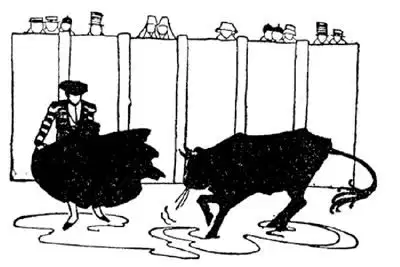
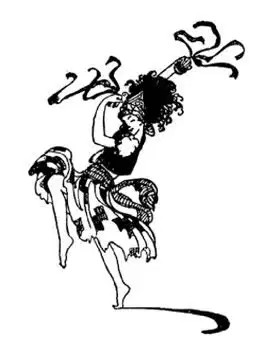

32
Castles in Spain (continued
)
西班牙城堡（续）

WHEN-I-WAS -A-BOY I once climbed over a fence into a field, and before I knew it a bull was dashing toward me. I barely had time to scramble back over the fence again—a narrow escape; I didn’t see any fun in it at all. But in Spain on Sundays and holidays great crowds of people go to an outdoor theater called the bull-ring to see men fight bulls.
The people sit on seats outside a fence that shuts in a sandy field, and from that safe place they watch the bull-fights. A gate is opened into the field and a big, wild bull rushes in. A man called a bull-fighter goes to meet him with a red cloak in his hand and waves it in the face of the bull. This makes the bull mad, so with lowered horns he charges the red cloak. The bull-fighter jumps to one side just as the bull reaches him, and the angry bull, unable to turn quickly, passes him by. The bull-fighter teases the bull in this way again and again. After worrying him in various ways, as a cat plays with a mouse, the bull-fighter kills the bull with a thrust of a long sword. It seems to us very cruel, but in Spain they say we kill bulls for meat and do not give any one the fun of seeing them killed.

The bull-fighter teases the bull with a red cloak
斗牛士用一个红色斗篷逗弄公牛
A bull-fighter has to be very brave and very skilful, and his foot must not slip on the sandy ground, or he cannot dodge the bull and he will be killed. Almost every city and town in Spain has a bull-ring, as almost every city in the United States has a baseball field or a stadium, for bull-fighting is a national sport, as baseball or football is our national sport. Even boys play bull-fighting, one making believe he is the bull and the other the bull-fighter.
Every country seems to have certain games they like to play best. In Spain the girls do not jump rope, but they dance instead, and keep time by clicking little clappers on their fingers, often singing as they do so. The clappers look like big chestnuts and so are called castanets, which means chestnuts. They dance in twos and fours on the sidewalk, in the parks and squares, wherever our children would jump rope or play hop-scotch. Even in the great Cathedral of Seville the choir boys dance with castanets in front of the altar at certain church festivals. It is the only place in the World where any one dances in church.
Spanish houses have no front yard nor back yard nor side yard, but an inside yard with the rooms all around it. This inside yard is called a patio and it is often a living-room and dining-room for all who live in the house.
As you ride through Spain on a train you can see from the car window a very peculiar looking tree—different from any tree that grows in our country. This is the cork-tree. The little and big corks we use for bottle stoppers don’t grow on trees as cherries or peaches do. They are made from the bark of a kind of oak. The bark is cut off from the tree in large pieces and cut up into big and little corks. The tree then grows another coat of bark, but it takes nine years to grow a thick enough bark to be cut again. So every cork you use is nearly as old as you are, or older.

Instead of jumping rope they dance with castanets
她们不跳绳而是手持响板跳舞
Cork-trees live to a great age, much longer than people do. But another tree you see in Spain grows to be still older. It is the olive-tree, which bears a fruit that looks something like green cherries. It is said that olive-trees have been known to live and bear fruit for a thousand years! Olives have been used as food since Bible times and long before that, and yet many people have to learn to like them. Olives are also pressed to make olive oil, which we use in salad dressing, for no other kind of oil is quite as good for food. In Spain they often use it instead of butter, and it is also made into a very pure soap called Castile soap, which you may have used.
Winners of games long ago used to be crowned with a wreath made of olive leaves, and in time of war, messengers bringing peace used to carry an olive branch. In certain parts of Spain you can ride all day long on a train and see olive-trees, olive-trees, olive-trees, from morning to night, till you wonder what the people can do with so many. They use a great many olives themselves, for olives are often bread and butter, meat and vegetables to Spaniards, but they send millions of bottles of olives and olive oil all over the World to other countries that have none.
One of those cities that says it is like Paris is the capital of Spain. It is near the center of the country. It is called Madrid. Old Madrid had narrow streets and small houses. New Madrid has broad boulevards and big buildings, and if you did not hear the people speaking Spanish you might think you were in Paris or even in New York. In old Spain men used to say all the time “Manyana,” which means “to-morrow,” for they put off everything they could until to-morrow. New Spain says “Do it now.” When you are in Madrid and say you live in America, they think you mean South America, and that of course you speak Spanish, for to a Spaniard “America” means South America. A Spaniard who has made his fortune in South America comes “home to Madrid” to live on what he has made, for a house in Madrid is his “Castle in Spain.”
Sometimes two brothers have families and live in the same house, but usually they get along better if they live in separate houses. Portugal and Spain are like two brothers. They speak a language that is alike and the people are alike in other ways, but they have never been able to get along together, though they tried it once for a little while. In both countries they like dancing and music. In both countries they raise cork and olives. In both countries they like bull-fights—though in Portugal they do not kill the bull, and they wrap the points of his horns so that he can’t kill.
【中文阅读】
我小的时候有一次爬过篱笆，跑到一块田里。还没等我反应过来，就有一头公牛向我冲过来。我赶紧从篱笆上爬回去——差一点就被公牛顶到；我可没觉得那有什么好玩的。但在西班牙，每逢星期天和节假日，人们成群结队到一个叫做斗牛场的露天剧场去观看斗牛。
斗牛场中间有一块沙地，四周围着栅栏，人们坐在栅栏外的座位上，可以安全地观看斗牛表演。通向中间场地的门打开后一头高大凶猛的公牛就冲了进来。一个叫做斗牛士的人手拿红色斗篷出来迎接它，并在它的面前挥舞斗篷。这个动作激怒了公牛，于是它低下头，头角向着斗篷。斗牛士在公牛就要顶到他那一瞬间跳到一旁，愤怒的公牛不能迅速转身就从他的身边擦身而过。斗牛士就用这种方式一次又一次地逗弄公牛。像猫戏弄老鼠那样用各种方法折磨它之后，用一把长剑刺死公牛。在我们看来这似乎很残忍，但西班牙人说我们杀牛吃肉却不让人有看牛被杀的乐趣。
斗牛士必须非常的勇敢，也要很有技巧，他的脚在沙地上不能打滑，否则就无法躲开公牛，死在牛角下。西班牙几乎每个城镇都有斗牛场，就像美国几乎每个城市都有棒球场或体育场一样，因为斗牛是西班牙一项全民娱乐，就像棒球或橄榄球是美国的全民娱乐一样。甚至小男孩都玩斗牛游戏，一个假扮牛，另一个假扮斗牛士。
每个国家似乎都有某些人们最喜欢的运动。在西班牙，女孩们不跳绳，她们跳舞，一边跳舞一边按节拍用手指上的响板敲出“咔哒、咔哒”的声音，还常伴着唱歌。这种响板看起来就像大栗子，所以在西班牙语中“响板”（castanet）就是栗子的意思。她们两人一对或四人一组在人行道、公园里或广场上跳舞，凡是在我们的孩子跳绳或玩“跳房子”游戏的地方，她们都会去跳舞。甚至在塞 维利亚大教堂，在某些宗教节日里唱诗班的男孩也会在圣坛前手持响板跳舞。那是世界上唯一能在教堂里跳舞的地方。
西班牙的房屋没有前院、没有后院，也没有侧院，但有个四周都是房间的内院。这个内院叫做“天井”，通常作为住房的客厅和餐厅。
当你乘火车在西班牙旅行时，你可能会看到车窗外有一种样子很奇特的树——和美国的任何一种树都不一样。这种树叫做栓皮槠。我们用作瓶塞的大大小小的软木塞子并不是像樱桃或桃子那样长在树上的，而是用栓皮槠这种橡树的树皮做的。大块的树皮从树上割下来切成大大小小的软木塞。剥过皮的树然后会长出新一层树皮，但是新一层树皮要长9年，才能达到足够的厚度，被再次剥下来。所以你用的每一个软木塞的年龄和你差不多大，有的也许比你还大。
栓皮槠树龄很长，比人的寿命要长得多。但在西班牙你还能看到一种树，树龄更长。那就是橄榄树，它的果实看起来有点像绿色的樱桃。据说有人见过树龄达一千年的橄榄树，而且还能结果实！早在《圣经》时代以前橄榄就被用作食物了，但很多人必须经过一段时间才能习惯它的味道。橄榄还可以经过压榨做成橄榄油，就是我们在沙拉调料中用的橄榄油，因为那是最佳的食用油。西班牙人常用橄榄油不用黄油，橄榄油还能用来生产一种非常纯正的肥皂，叫做“卡斯蒂利亚肥皂”，你也许就用过。
古代，比赛获胜者都给戴上橄榄枝做成的花环，在战争期间，带来和平消息的信使携带着一枝橄榄枝。在西班牙有些地方，你坐了一整天火车，从早到晚看到的都是橄榄树，橄榄树，橄榄树，这时你不禁会想人们有这么多的橄榄树能做什么呢。他们自己使用大量的橄榄，因为对西班牙人来说橄榄就意味着面包和黄油、肉和蔬菜，但他们还把无数瓶橄榄和橄榄油出口到世界各地不产橄榄的国家。
很多城市的居民都说自己的城市像巴黎，西班牙首都就是其中一个城市。它差不多位于这个国家的中心。叫做马德里。旧马德里的街道狭窄，房屋矮小。新马德里有宽敞的林荫大道和高大的楼房，如果不是听到有人说西班牙语的话，你也许会觉得自己是在巴黎或者甚至在纽约。在以前的西班牙，人们总是说“Manyana”，意思就是“明天吧”，因为他们总是把所有能拖的事情都拖到明天再说。现在西班牙人会说“现在就做”。如果在马德里你说自己住在美国，他们认为你是说南美洲 [1] ，并且认为你肯定会说西班牙语，因为对西班牙人来说，“美 国”就意味着“南美洲”。一个在南美洲发了财的西班牙人衣锦还乡回到马德里，靠自己挣的那笔钱就生活在马德里了，因为马德里的房子才是他的“西班牙城堡”——他心目中最奇妙的房子。
有时两兄弟都成家后仍然住在同一个房屋里，但如果他们分开住的话通常会相处得更好。葡萄牙和西班牙就像两兄弟。他们说的语言很相似，在生活习惯等方面也很相似，但他们始终合不来，尽管偶尔他们也努力和好过。两个国家的人都喜欢舞蹈和音乐，都种植栓皮槠和橄榄树，都喜欢斗牛——不过在葡萄牙他们不杀死公牛，而是把牛的尖角包起来，这样斗牛士就不会丧命了。